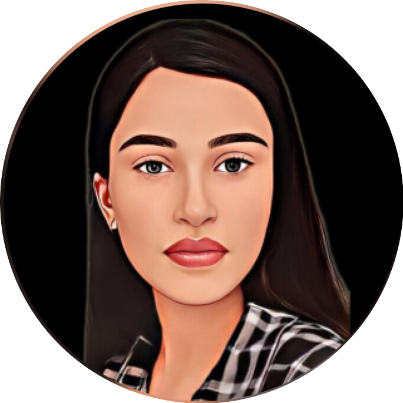

Bhanvi Sharma

Summary
A Commerce Graduate with a passion for content writing and an emerging interest in web development. Skilled in Microsoft Office, Canva, SEO, and creating engaging blog articles. Completed internships in marketing, sales, and content writing, where I honed my writing skills and gained exposure to content optimisation. Seeking opportunities to leverage my diverse background and pursue a career in web development. Detail-oriented and proficient in simple design, I strive to deliver clean and visually appealing solutions. Currently focused on acquiring my first development project while continuously expanding my coding knowledge.
Education
-
Bachelor of Commerce (B.Com) (Hons.)
Mata Sundri College For Women, Delhi University
2020-2023
-
Senior Secondary (XII), Commerce
CBSE Board
Year of completion: 2020
Percentage: 91.25%
-
Secondary (X)
CBSE Board
Year of completion: 2018
Percentage: 91.75%
Internships
-
Content Writing - Contezy, Virtual
Oct 2022 - Mar 2023
- Created plagiarism-free content including informative articles, buying guides, and how-to guides
- Wrote content in an engaging and friendly tone considering the language understanding level of readers
-
Content Development - Quizzy, Virtual
Mar 2022 - Jun 2022
- Developed academic content for k-12 level
- Developed SEO-friendly content with conceptual clarity
-
Campus Ambassador - Internshala, Virtual
Sep 2021 - Oct 2021
- Promoted Internshala trainings and internship platform in my college campus, among my peers, and friends
- Worked on enhancing my communication and convincing skills
-
Sales and Marketing - Ifortis Corporate, Virtual
May 2021 - Jun 2021
- Developed and implemented digital marketing strategies
- Worked on building my networking, and interpersonal skills
Skills
- MS-PowerPoint ⭐⭐⭐
- HTML ⭐⭐
- Search Engine Optimisation ⭐⭐
- Creative Writing ⭐⭐
- Canva ⭐⭐
Achievements
- Inter-school gold medalist in Mathematics competition held by Career Launcher (2015)
- Scored 99/100 in Secondary board mathematics examination (CBSE)
Other